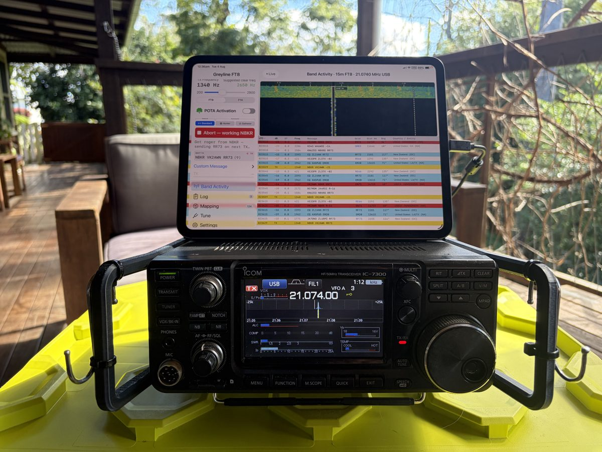
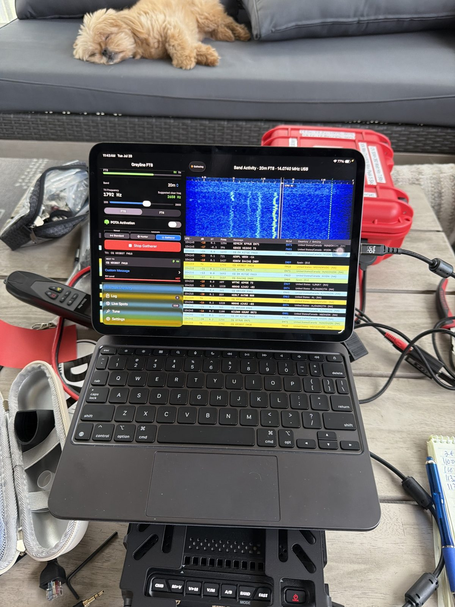
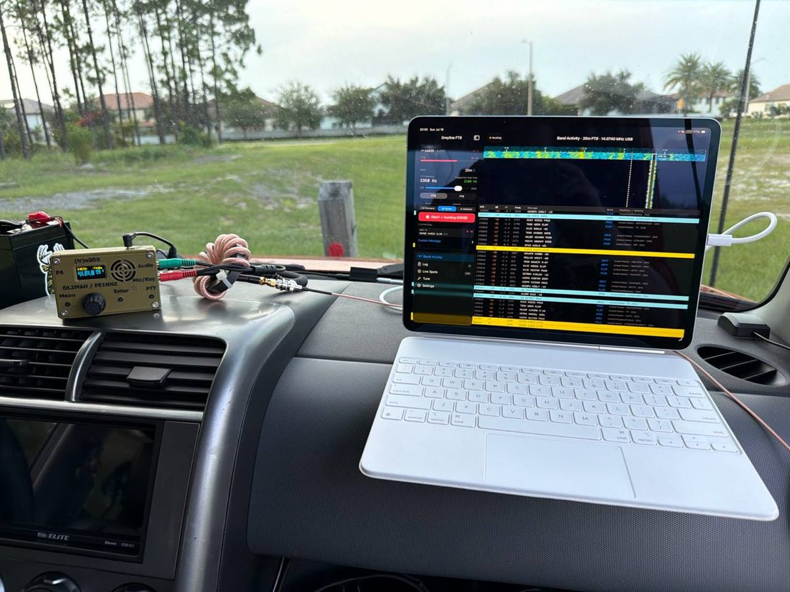

Photos and stories from Greyline FT8 users out in the field. Thanks to everyone who shared their activations, setups, and contacts. Want to share your own? Email me at support@greylineft8.com

This is a game changer for me. I can now take my iPad on POTA rather than my MacBook Pro M5. This is what I have been waiting for. Yay!!!! So good.

I'm an Apple user and have been struggling to find a good, full featured easy to use FT8 option and was dissatisfied with what was available. Well problem solved...your app is wonderful!

I got to use Greyline with a (tr)uSDX radio. It worked GREAT! Really easy to set up and so compact! ❤️